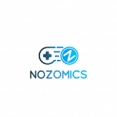
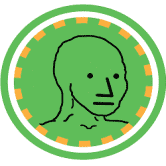

NFTy Yacht Club NFTy 游艇有 5 种尺寸类别中的 1 种，该系列中有 20 种型号。NFTy Yacht 所有权附带超级游艇桥的使用权。超级游艇桥是 NFTy 游艇所有者在 Discord 上的专属聚会场所。它是
NftyTribe NftyTribe 是一个多链 NFT 市场，促进了 NFT 交换的下一级体验。为了充分发挥这种潜力，我们决心将实用性放在首位！ 这些是 NftyTribe 的一些主要功能 - NFT 质押： NftyTribe 为创作者提供
NFTZine NFTZine #001 是 Art101的第一个1,000 个独特、交互式和可打印的 ETH NFT 杂志的集合。 Art101 的 NFTZine 是一个交互式和可打印的 NFT Zine。NFTZines 是可生成
NFUT Cards NFUT Cards 是一款 PVP 足球游戏，围绕足球经理元界创建，以区块链技术和 NFT 集合作为游戏资产，玩家可以通过游戏进行游戏并赚取代币，并通过代币 $NFUT 为 NFUT 生态系统做
NGUYENPHUNHO 赚取 50000 ETH 只需要 0.5 ETH + gas 费。10 年后高达 100000 ETH 的潜在收入重复高达 4 个级别。 REAL NGUYEN PHU NHO GLOBAL AUTOPOOL 全球单线自动池超快速赚取 99400+ ETH
NICEE NICE 是一个 SushiSwap 分叉，总供应量在 69 到 420 之间，没有预挖。 一旦供应量超过 420，排放量将自动减少 100 倍，并且燃烧率增加到交易的 20%。一旦供应量低于 69
NiFi Club Everscale 区块链上的创新 NFT 市场，可让您创作和销售艺术品。交易成本低，速度快。 NiFi Club 是第一个引入革命性创新的平台——代言。 如果我们结合两个 NFT 会发生什么？
NiftyKicks Factory Nifty Kicks 是首个在 Wax 区块链上建立工厂的 P2E 游戏。它从一开始就考虑到了社区，它有一个强大的代币经济学模型，我们认为它会在很长一段时间内充满乐趣和回报。
NIFTYMOJI 将 3,186 个 EMOJI 视为不可替代的代币。NFT 遇上 DeFi！☑ 有限的 NIFTYMOJIS：区块链上只会发布 3,186 个 Niftymojis（基于 OpenMoji 12.0）！☑
Niftyriots NiftyRiots 为您带来一个以前卫技术为正义事业打造的 NFT 系列。我们的最终目标是由来自边缘群体的艺术家在 Metaverse 中展示艺术。我们应用深度神经网络让世界了解不同的现
Night Life Crypto Night Life Crypto 是一个游戏平台，它将区块链游戏的质量提升到应有的水平。该平台正在制作高质量的平台和街机游戏，这些游戏将复制 Steam 和加密之外其他平台上游戏的
NikaSwap 代币信息 代币名称： NIKA 合约地址： 0x9716bce1d79c00b6585697d81ef804bc12191f90 总供应量：1,000,000,000 尼卡分配： 分配按从大到小的顺序排列： 代币销售： 30% (300,000,000 NIKA) 流动资金池： 30%（
Nine Chronicles 你将如何探索九界？ Nine Chronicles 是一款奇幻 MMORPG，设置在一个由突破性技术驱动的广阔奇幻世界中，让玩家可以自由地玩他们想要的游戏：探索、制作、采矿
Nowswap Nowswap 是业界第一个在以太坊上的去中心化交易协议，它为 3,000 美元以下的小额交易提供低、动态的交易费用，解决了最大的 DEX 用户服务不足的部分。 Nowswap 背后的团队在
 Nozomics Nozomics 是一个为您提供 rank2earn 体验的平台：玩游戏、得分并爬上我们的排行榜。凭借来自不同类型的不同游戏，Nozomics 提供了各种有趣的游戏玩法。每个游戏
 npct.exchange npct.exchange 是一个基于币安智能链 (BSC) 的去中心化交易所 - pancakeswap 的一个分支 - 一个自动做市商 (AMM) 和收益聚合器，用户可以在其中提供流动性并赚取费用或质押各种代币并获得
NuovaLira.io ₤ LIRE 回来了！ 我们心爱的 ₤ LIRE 利用币安智能链 (BSC) 提供的速度和技术，以 BEP20 代币的形式以加密货币的形式回归。 加入我们的项目，该项目可以通过 Stake $ BUSD 或₤ LIRE 本
Oceans Finance 什么是海洋金融？ 多链自动质押和自动复合 DEFI 3.0 协议 Oceans Finance提供了一种分散的金融资产，通过使用其独特的协议，以可持续的固定复利模型奖励用户